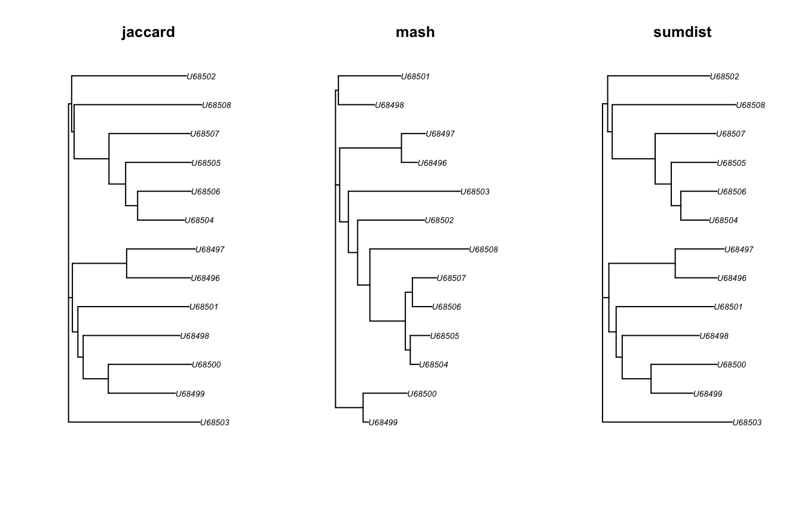

korthoR calculates pairwise kmer jaccard distance between all sequences of an AAStringSet.
In most cases you need to first install the following system-wide packages to be able to compile the R dependencies. If you do not have ‘sudo’ rights, please ask your system-admin to install them for you.
Ubuntu/Debian
sudo apt-get install libcurl4-openssl-dev libssl-dev libxml2-dev libglu1-mesa-dev libgit2-dev
#Pandoc is required to build R Markdown vignettes
#sudo apt-get install pandoc
#pkgdown dependencies - pkgdown is used to build R package pages
#sudo apt-get install libssh2-1-dev libfontconfig1-dev libharfbuzz-dev libfribidi-dev libfreetype6-dev libpng-dev libtiff5-dev libjpeg-devCentOS
sudo yum install libcurl-devel openssl-devel libxml2-devel mesa-libGLU-devel libgit2-devel
#Pandoc is required to build R Markdown vignettes
#sudo yum install pandoc
#pkgdown dependencies - pkgdown is used to build R package pages
#sudo yum install libssh2-devel fontconfig-devel harfbuzz-devel fribidi-devel freetype-devel libpng-devel libtiff-devel libjpeg-turbo-develinstall.packages("Rcpp")
install.packages("RcppThread")
install.packages("devtools")
install.packages("testthat")
install.packages("reshape2")
install.packages("dplyr")
install.packages("ape")if (!requireNamespace("BiocManager", quietly = TRUE))
install.packages("BiocManager")
BiocManager::install(
c(
"MSA2dist")
)devtools::install_github("kullrich/korthoR", build_vignettes = TRUE, dependencies = TRUE)library(korthoR)
## load example sequence data
data("hiv", package="MSA2dist")
## count kmers of length 6 for all amino acids
l <- hiv |>
MSA2dist::cds2aa() |>
korthoR::count_kmers(k=6)
l
## count kmers using multiple threads
l <- hiv |>
MSA2dist::cds2aa() |>
korthoR::count_kmers(k=6, threads=2)
l
## get jaccard distance
hiv |>
MSA2dist::cds2aa() |>
korthoR::count_kmers(k=6) |>
korthoR::get_jaccard_from_self(k=6)
## get jaccard distance using multiple threads
hiv |>
MSA2dist::cds2aa() |>
korthoR::count_kmers(k=6, threads=2) |>
korthoR::get_jaccard_from_self(k=6, threads=2)
## get bionjs tree
data(hiv, package="MSA2dist")
l <- hiv |>
MSA2dist::cds2aa() |>
korthoR::count_kmers(k=6)
d <- korthoR::get_jaccard_a_b(kmer_counts_q=l,
kmer_counts_t=l,
k=6)
t1 <- get_bionjs_tree(jaccard_df=d, value="jaccard")
t2 <- get_bionjs_tree(jaccard_df=d, value="mash")
t3 <- get_bionjs_tree(jaccard_df=d, value="sumdist")
par(mfrow=c(1,3))
plot(t1, main="jaccard")
plot(t2, main="mash")
plot(t3, main="sumdist")
If you would like to contribute to korthoR, please file an issue so that one can establish a statement of need, avoid redundant work, and track progress on your contribution.
Before you do a pull request, you should always file an issue and make sure that someone from the korthoR developer team agrees that it’s a problem, and is happy with your basic proposal for fixing it.
Once an issue has been filed and we’ve identified how to best orient your contribution with package development as a whole, fork the main repo, branch off a feature branch from main, commit and push your changes to your fork and submit a pull request for korthoR:main.
By contributing to this project, you agree to abide by the Code of Conduct terms.
Please report any errors or requests regarding korthoR to Kristian Ullrich (ullrich@evolbio.mpg.de)
or use the issue tracker at https://github.com/kullrich/korthoR/issues
This repository adhere to Contributor Covenant code of conduct for in any interactions you have within this project. (see Code of Conduct)
See also the policy against sexualized discrimination, harassment and violence for the Max Planck Society Code-of-Conduct.
By contributing to this project, you agree to abide by its terms.
Pagès H., Aboyoun P., Gentleman R., and DebRoy S. (2017). Biostrings: Efficient manipulation of biological strings. R package version, 2.56.0. Biostrings
Paradis E., Schliep K. (2019). ape 5.0: an environment for modern phylogenetics and evolutionary analyses in R. Bioinformatics, 35, 526-528.https://doi.org/10.1093/bioinformatics/bty633
Scrucca L., Fraley C., Murphy T.B., Raftery A.E.(2023). Model-based clustering, classification, and density estimation using mclust in R. Chapman and Hall/CRC https://doi.org/10.1201/9781003277965
Sheikhizadeh A.S., de Ridder D., Schranz M.E., Smit S. (2018). Efficient inference of homologs in large eukaryotic pan-proteomes. BMC bioinformatics,*. 2018 Dec; 19(1), 1-1. https://doi.org/10.1186/s12859-018-2362-4